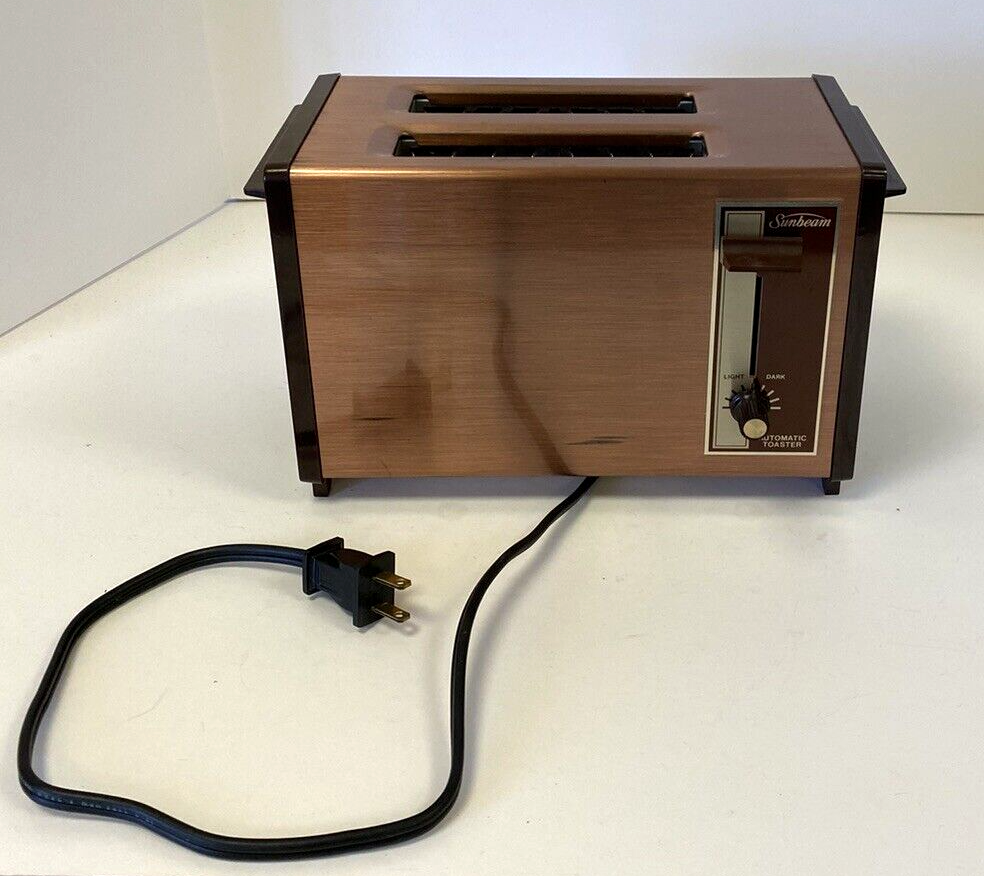

Toasty Lunch

Description
Ingredients
- Yoghurt
- Banana
- Strawberries
- Granola
- Chocolat Sprinkles
Steps
- Peel banana and cut in parts
- Put the banana parts and some strawberries in the blender
- Add some cups of yoghurt into the blender
- Mix it all up until it's smooth as silk
- Pour the contents of the blender into a breakfast bowl
- Add a few spoons of granola and stir lightly
- Finish it off with some chocolate sprinkles
- Enjoy your trusty old blender breakfast